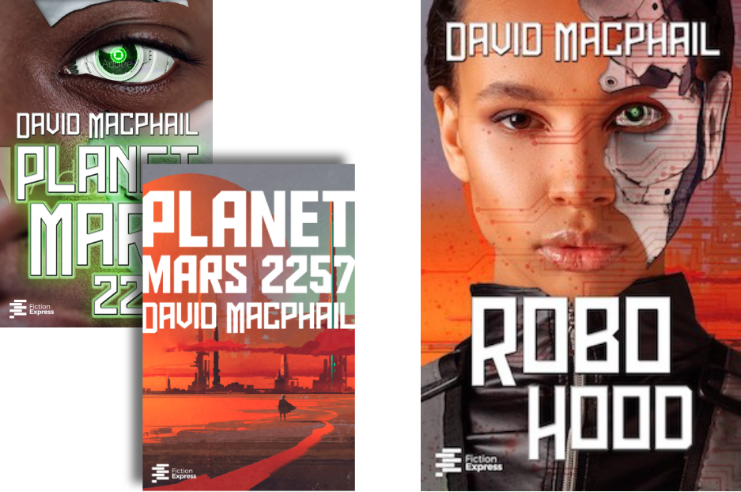

COVER DESIGN
Usually a cover design project begins with research into the genre so I can create a cover suited to the market. From there, I come up with several potential covers and make mock-ups for those ideas I think work best for the project. When I have a few interesting options, it's important to consult with the editorial team or the author and, once we have a winner, I can set out to make the final version.
Often-used tools include:
- Photoshop (layouts, photo editing, etc.)
- Illustrator (especially for vector illustration)
- Procreate (digital illustration)
